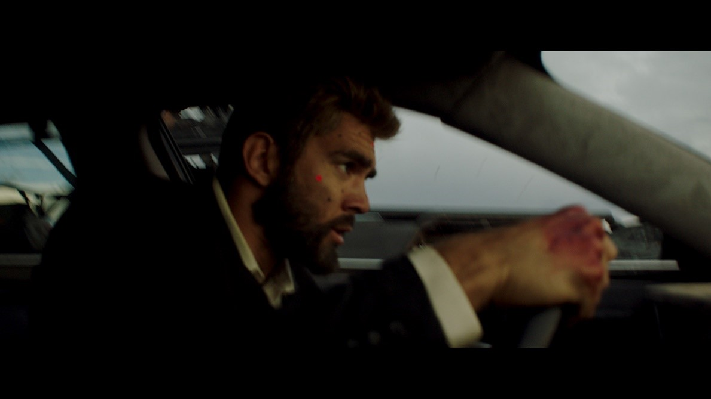
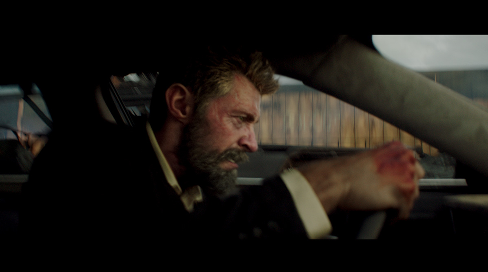
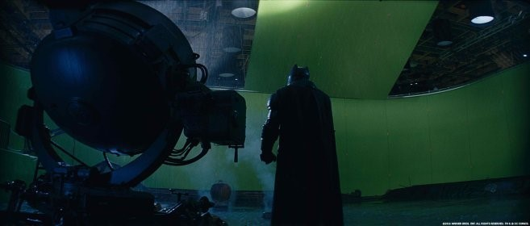
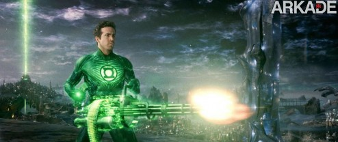

Efeitos Especiais
Efeitos especiais estão presentes em todos os filmes, os de sucesso, aqueles que foram mal de acordo com a crítica e aquelas séries que fazem você ficar horas e horas de frente a tv.
Muitas vezes, quando estamos assistindo, mal percebemos que o ator que está em cena é na verdade um dublê, quando até mesmo músculos e detalhes são feitos por computação gráfica, como por exemplo no filme: Logan (2017) temos cenas em que o nosso Wolverine na verdade é um dublê e que muitas das vezes nem se parece tanto assim com o então ator Hugh Jackman.
Mas graças ao avanço da tecnologia e efeitos visuais, mal percebemos a diferença, pois fica idêntico.
Dublê:

Rosto de Logan inserido digitalmente:

Isso também ocorre em batman vs superman (2016), que teve efeitos especiais, efeitos sonoros e um enredo merecedor de Oscar, tornando um filme de dar orgulho aos fãs.

Entretanto, assim como temos filmes e séries incríveis com efeitos de encherem os olhos, temos também algumas “aberrações’’ por assim dizer, trazendo como exemplo, Lanterna Verde (2011), que teve uma crítica um tanto quanto desagradável tanto a respeito dos efeitos, quanto do filme como um todo.

Mas não desmerecendo filmes ou series só por conta de seus
efeitos, logicamente existem obras em que os efeitos que por conta do baixo orçamento não são lá a melhor coisa, mas que só pelo roteiro por exemplo já conquistam muito bem seu público que por sua vez esperam ansiosos por uma continuação ou uma nova temporada. O maior problema das indústrias de filmes e séries, pode ocorrer por conta da baixa capacidade de entregar aos fãs um filme completo. Algo que possa agradar a seu “fandom” e obviamente os críticos em geral.